П 4.3 №8
Применяя последовательный процесс ортогонализации Шмидта к
системе векторов  ,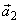, пространства 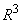,
постройте ортогональный базис, если
,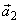, пространства 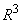,
постройте ортогональный базис, если
,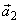, пространства 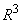,
постройте ортогональный базис, если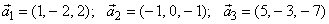.
РЕШЕНИЕ:
Процесс ортогонализации состоит в следующем. Из
неортогонального базиса 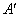 строят новый,
ортогональный базис по формулам:
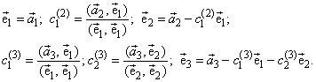
Проделаем эту процедуру.
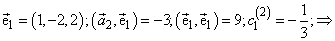
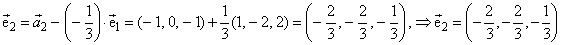.
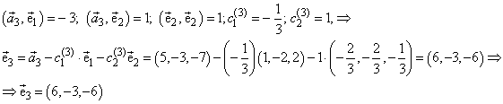
Осталось нормировать базис 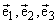.
В итоге получаем:
,  ,
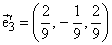.
,
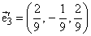.
,
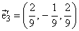.Ответ: , , .
, .